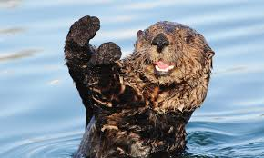
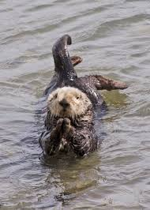
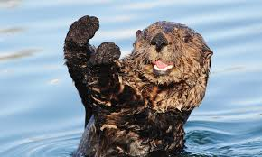
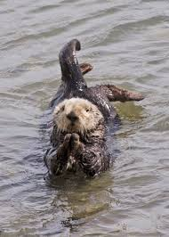
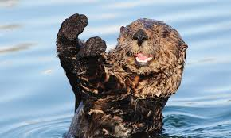
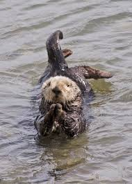

Otters are carnivorous mammals in the subfamily Lutrinae. The 13 extant otter species are all semiaquatic, aquatic or marine, with diets based on fish and invertebrates. Lutrinae is a branch of the weasel family Mustelidae, which also includes badgers, honey badgers, martens, minks, polecats, and wolverines.

